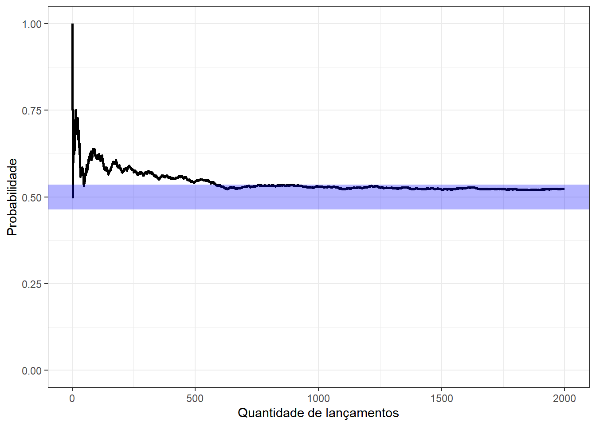
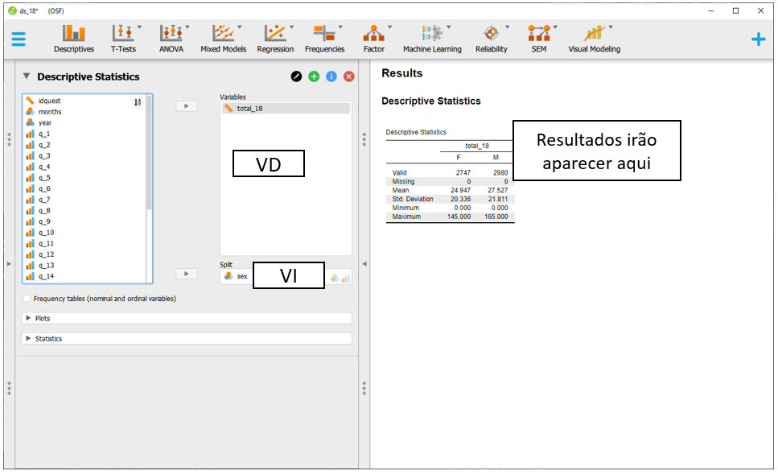
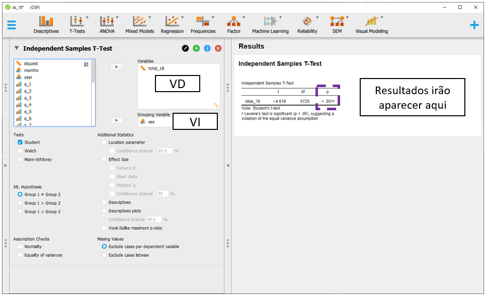
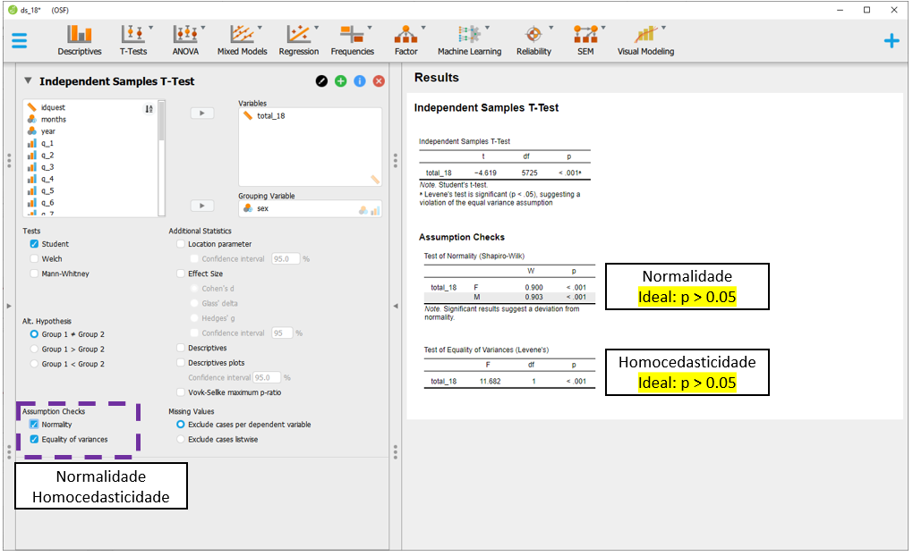
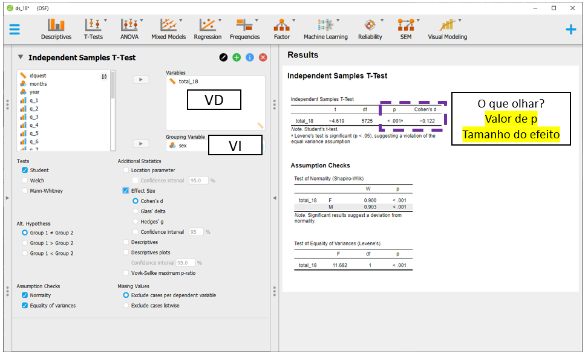
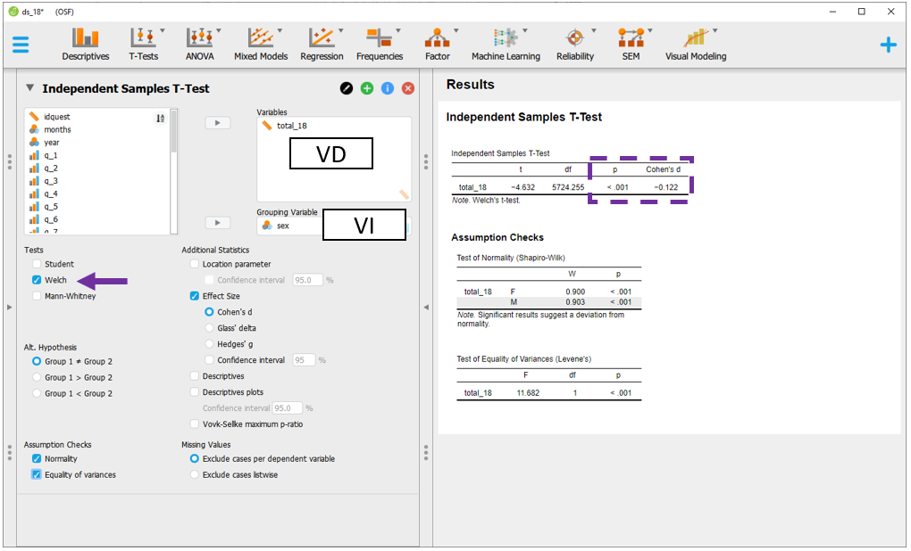
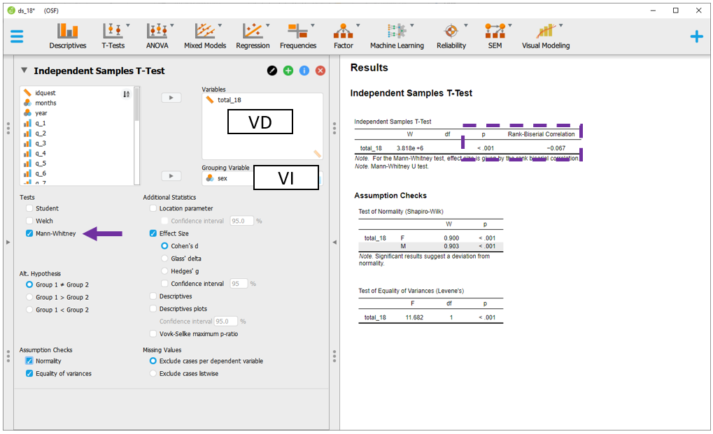

Capítulo 6 Teste T
Objetivos do capítulo
1. Apresentar o Teste T
2. Discutir os pressupostos de execução do Teste T
3. Realizar gráficos relacionados à comparação de médias
4. Apresentar e interpretar métricas de tamanho do efeito
5. Dar exemplos relacionados à escrita dos resultados
6. Apresentar testes robustos e não paramétricos
O Teste T é um teste estatístico frequentemente utilizado para testar hipóteses sobre diferenças entre médias. Por utilizar dados amostrais para estimar um parâmetro (\(\mu\)), ele é um teste parâmetrico. Apenas por um preâmbulo histórico, a origem do Teste T remonta o artigo publicado em 1908 por William Gosset. Na época, em função de seu trabalho na cervejaria Guiness, ele não assinou o artigo, mas apenas usou seu pseudônimo Student, motivo pelo qual o Teste T também é chamado de Teste T de Student.
É importante notar que estudantes de Psicologia e profissionais que trabalham com avaliação psicológica costumam ser deparados com uma métrica chamada “T score” (Escore T, as vezes), desenvolvido em 1939 por um professor de Psicologia (William Anderson McCall). Tenha em mente que essa métrica não tem relação com os procedimentos inferenciais relacionados ao Teste T a não ser uma similaridade de nome (Krus & Krus, 1977).
É possível usar o Teste T para comparar a média de uma amostra com a média populacional (one sample t test), para comparar duas médias amostrais (two sample t test) ou para comparar duas médias de uma mesma amostra que foi investigada em dois momentos do tempo (paired ou matched t test).
Se assume os seguintes pressupostos funcionais à execução de um Teste T:
(i) Os dados são aleatórios e representativos da população
(ii) a variável dependente é contínua
(iii) A distribuição dos resultados populacionais é assumida como normal
Quando há o interesse de utilizar o Teste T para comparar os resultados de dois grupos, é também necessário que:
(iv) As variâncias dos grupos seja homogênea (princípio da homocedasticidade)
(v) ambos os grupos sejam independentes
Quando se utiliza o Teste T pareado, o princípio da independência não é mais solicitado, mas é necessário que:
(vi) o tamanho amostral seja o mesmo nos grupos
Eventualmente, quando os pressupostos são violados, testes não-paramétricas com propostas parecidas podem ser implementadas. A tabela abaixo concatena os testes estatísticos relacionados e, para fins de comparação com outros trabalhos, há autores que sugerem que se use sempre as versões não-paramétricas em resultados obtidos por processos de avaliação psicológica, arguindo que os dados têm nível de medida “ordinal”.
| Versão do teste | Um grupo | Dois grupos independentes | Grupos pareados |
|---|---|---|---|
| Paramétrica | One-sample t test | Two-samples t test | Paired t test |
| Não-paramétrica | Signed rank test | Mann-whitney | Wilcoxon |
Nota: Existe um intenso debate sobre a utilização de testes paramétricos e não-paramétricos em Psicologia. Algo pouco comentado, apesar de ser o aspecto mais importante em minha opinião, é que a hipótese testada em um teste paramétrico é diferente da testeda em um não-paramétrico. Ou seja, a substituição de um teste estatístico por outro, necessariamente, muda a hipótese de pesquisa investigada.
6.1 Pesquisa
Base: Livro - R - ASQ SE 12 e 18
Neste capítulo, vamos utilizar a pesquisa intitulada “Confirmatory analysis and normative tables for the Brazilian Ages and Stages Questionnaires: Social–Emotional”, publicada em 2019 na Child Care Health Development. Esse trabalho teve dois objetivos. O primeiro visou confirmar a estrutura fatorial de um instrumento utilizado para avaliar possíveis atrasos no desenvolvimento de competências sociais e emocionais (ASQ:SE) e o segundo visou desenvolver tabelas normativas para comparar meninos e meninas. Essa é uma pesquisa muito importante, visto que conta com uma base de dados robusta (mais de 50 mil participantes) e faz interface entre psicometria, avaliação psicológica e políticas públicas.
Abaixo, há a escrita de hipóteses utilizada para comparar os resultados de meninos e meninas, bem como o nível de significância adotado na análise.
\[H_0: \mu_{meninos} - \mu_{meninas} = 0 \\ H_a: \mu_{meninos} - \mu_{meninas} \neq 0 \\ \alpha = 0.05\]
6.2 Execução no R
No ambiente R, a primeira etapa importante é assegurar que a base de dados tenha o resultado relacionado às competências sociais e emocionais das crianças. Esse valor será computado pela soma de todos os itens da escala. No dplyr, isso é feito pela integração da função mutate com a select e será executado às crianças com 12 (asq_12months) e 18 meses (asq_18months).
asq_12months <- asq_12months %>%
mutate(total_12 = rowSums(select(., starts_with("q_")), na.rm = TRUE))
asq_18months <- asq_18months %>%
mutate(total_18 = rowSums(select(., starts_with("q_")), na.rm = TRUE))Em seguida, iremos começar pelos 12 meses. O processo de testagem da hipótese é feito preliminarmente de maneira tabular e gráfica e, em seguida, pela implementação do teste específico e seus pressupostos. A tabela a seguir apresenta as principais características estatísticas dos resultados:
asq_12months %>%
group_by(sex) %>%
summarise_at(vars(total_12), lst(n=~n(),media=mean, DP=sd)) %>% pander()| sex | n | media | DP |
|---|---|---|---|
| M | 543 | 24.92 | 21.47 |
| F | 498 | 24.44 | 20.48 |
Em seguida, a realização de um gráfico é bastante informativa para apresentação dos resultados. Apesar desse recurso não ser decisivo na tomada de decisão, ele auxilia a visualilzação da distribuição da variável que temos interesse, bem como oferece um entendimento inicial dos resultados.
Uma vez que a VI é tratada como discreta e a VD é continua, tanto o gráfico de colunas/barras como o histograma/densidade são úteis. O gráfico de barras tem uma vantagem de ser possível adicionar barras de erros, que já apresentam uma primeira evidência inferencial. Por sua vez, histogramas e gráficos de densidade descrevem bem o formato da distribuição de dados.
gridExtra::grid.arrange(
#plot 1
ggplot(asq_12months, aes(x = sex, y = total_12, fill = sex)) +
geom_bar(stat = "summary", fun = mean) +
stat_summary(fun.data = mean_se, geom = "errorbar", width = .2),
#plot 2
ggplot(asq_12months, aes(x = total_12, fill = sex)) +
geom_density(color = NA, alpha=.6)
)
Feito isso, o próximo passo é a testagem formal da hipótese. A função t.test é nativa do R o vetor t_test_12_m será criado.
A tabela a seguir apresenta os resultados.
| Test statistic | df | P value | Alternative hypothesis | mean in group M | mean in group F |
|---|---|---|---|---|---|
| 0.3679 | 1039 | 0.713 | two.sided | 24.92 | 24.44 |
Os achados trazem a média de ambos os grupos (24.92 e 24.44), a estatística do teste (0.37), chamada de T calculado, os graus de liberdade (1039) e o valor de p 0.71.
Repare que como o valor de p é superior ao valor estipulado do nível de significância (0.05), falha-se em rejeitar a hipótese nula. Nesse sentido, apesar dos resultados serem numericamente distintos, eles não são estatisticamente significativos (na população).
Um aspecto importante é que a validade da interpretação dos resultados depende dos pressupostos do modelo estatístico. A violação destes pressupostos distorce, limita ou invalida as interpretações teóricas propostas, uma vez que tanto o aumento do erro do tipo 1 (falso positivo), como do tipo 2 (falso negativo) podem ocorrer (Barker & Shaw, 2015; Ernst & Albers, 2017; Lix et al., 1996). Corriqueiramente, testar os pressupostos é uma etapa anterior à própria realização do teste inferencial. Entretanto, pedagogicamente a apresentação deles após a execução do teste parece mais adequada. Assim, eles serão testados a seguir.
Normalidade: O Teste T de duas amostras independentes assume que os resultados da variável de interesse se distribuam normalmente. É importante relembrar que o Teste T é um caso especial de um modelo de regressão, o que significa que a normalidade se refere aos resíduos do modelo. Neste caso, isso pode ser aproximado testando a distribuição marginal dos resultados de ambos os grupos.
A normalidade pode ser avaliada graficamente por QQ plots e por testes específicos, como o Shapiro-wilk, Anderson-Darling e Jarque Bera.
O QQ plot é um gráfico que reúne a distribuição empírica ordenada dos quantis contra os quantis da distribuição teórica (aqui, normal). Se os dados e a linha diagonal se soprepuserem, isso é uma evidencia de que a distribuição empírica é a mesma da distribuição teórica. Caso haja discrepância, isso aponta para desvio da normalidade.

Apesar do gráfico já ter sido bastante claro e sugerir fortemente desvio da normalidade em ambos os grupos, o teste formal é importante. O Shapiro-wilk costuma ser utilizado neste caso, uma vez que ele reúne diferentes características positivas no balanço entre erro do tipo 1 e 2 (Yap & Sim, 2011). A hipótese nula desse teste assume que a variável de interesse tem distribuição (aproximadamente) normal. Assim, rejeitar a hipótese nula sugere que esse princípio foi violado e, com isso, o Teste T pode gerar resultados distorcidos.
asq_12months %>%
group_by(sex) %>%
summarise(shapiro = shapiro.test(total_12)$p.value) %>% pander::pander()## `summarise()` ungrouping output (override with `.groups` argument)| sex | shapiro |
|---|---|
| M | 1.976e-19 |
| F | 4.798e-17 |
De maneira convergente ao gráfico, o Shapiro-wilk também apontou que o princípio da normalidade foi violado.
Homocedasticidade: A homogeneidade ou igualdade das variâncias pode ser testada visualmente, pelo teste Breusch-pagan, Levene ou Bartlett. De maneira análoga ao Shapiro-wilk, estes últimos assumem como hipótese nula a homogeneidade das variâncias. Consequemente, a rejeição desse pressuposto pode também trazer resultados distorcidos ao resultado do Teste T. Diferentemente do pressuposto da normalidade, o pressuposto da homocedasticidade foi preservado, tal como apresentado abaixo:
| Df | F value | Pr(>F) | |
|---|---|---|---|
| group | 1 | 0.02315 | 0.8791 |
| 1039 | NA | NA |
Após testar estes pressupostos, é importante avaliar o quanto a interpretação originalmente deve ser mantida. Existem diferentes recomendações sobre o que fazer quando os pressupostos são violados. Entre elas, transformar a distribuição da variável de interesse, usar versões robustas do Teste T, usar testes não-paramétricos com objetivos próximos ao Teste T ou eleger algum modelo estatístico mais adequado à distribuição empírica obtida pelos dados. Parte dessas recomendações serão demonstradas a seguir.
Com este teste inicial concluído, é também possível verificar se existem diferenças em idades mais avançadas, tal como 18 meses. A sintaxe é customizável e torna-se fácil testar a hipótese da diferença apenas modificando a hipótese e a sintaxe. A tabela a seguir apresenta as principais medidas estatísticas:
asq_18months %>%
group_by(sex) %>%
summarise_at(vars(total_18), lst(n=~n(),media=mean, DP=sd)) %>% pander()| sex | n | media | DP |
|---|---|---|---|
| M | 2980 | 27.53 | 21.81 |
| F | 2747 | 24.95 | 20.34 |
Por sua vez, o gráfico a seguir traz o padrão dos resultados aos 18 meses.
gridExtra::grid.arrange(
ggplot(asq_18months, aes(x = sex, y = total_18, fill = sex)) +
geom_bar(stat = "summary", fun=mean) +
stat_summary(fun.data = mean_se, geom = "errorbar", width = .2),
ggplot(asq_18months, aes(x = total_18, fill = sex)) +
geom_density(color = NA, alpha=.6))
Tal como feito anteriormente, a realização do Teste T e a verificação de seus pressupostos devem ser realizadas. Em relação aos resultados do Teste T, eles indicaram que ambos os grupos tem resultados médios significativamente diferentes. Meninos apresentam resultados mais elevados (M = 27.53, DP = 21.81) do que meninas (M = 24.95, DP = 21.81).
t_test_18m <- t.test(total_18 ~ sex, var.equal = T,data = asq_18months)
t_test_18m %>% pander::pander(., split.table = Inf)| Test statistic | df | P value | Alternative hypothesis | mean in group M | mean in group F |
|---|---|---|---|---|---|
| 4.619 | 5725 | 3.949e-06 * * * | two.sided | 27.53 | 24.95 |
Diferentemente do anterior, agora o resultado foi significativo (p < 0.01), trazendo evidências que permitem concluir pela rejeição da hipótese nula. Da mesma forma que feito anteriormente, a verificação dos pressupostos é um elemento fundamental para validade da interpretação dos resultados. Uma vez que tais testes foram demonstrados na seção anterior, eles não serão repdroduzidos agora. No entanto, dessa vez, a normalidade e a homocedasticidade foram violadas, fazendo que com as interpretações tornem-se frágeis, apesar de possíveis.
Isso posto, é importante ter uma atenção especial ao conceito subjacente à significância estatística. Um resultado que rejeita a hipótese nula, de forma alguma, deve ser entendido como “aceitação da hipótese alternativa” ou como evidência de causalidade, especialmente em delineamentos transversais.
É fundamental lembrar que o valor de P se refere à probabilidade de encontrar a estatística de teste calculada, ou uma ainda mais exterma, assumindo que a hipótese nula é verdadeira (Wasserstein & Lazar, 2016). Apesar de algo contra-intuitivo (e talvez desanimador), é assim que a estatística frequentista funciona.
6.3 Tamanho do efeito
Resultados significativos não são informativos em relação ao tamanho do efeito. Esta última métrica tem mais contato com as perguntas originalmente realizadas em uma pesquisa e é entendida como uma medida objetiva e padronizada da magnitude de um efeito observado independente da significância estatística. Dessa maneira, o tamanho do efeito pode ser considerado um indicador da relevância clínica dos grupos, cujo uso é sempre importante em pesquisas em Psicologia e áreas da saúde.
Existem duas famílias principais no ambiente do tamanho do efeito, que são a família “d” e a família “r”. Tecnicamente, quando comparamos médias, usamos o d de Cohen para calcular a distância entre as médias das distribuições sobrepostas.
A interpretação é a seguinte:
| Cohen’s d | Interpretação |
|---|---|
| d < 0.2 | Irrelevante |
| d \(\geq\) 0.2 | Pequeno |
| d \(\geq\) 0.5 | Moderado |
| d \(\geq\) 0.8 | Grande |
Para executar este teste no R, é possível contar com o pacote effsize, tal como demonstrado abaixo:
##
## Cohen's d
##
## d estimate: 0.12216 (negligible)
## 95 percent confidence interval:
## lower upper
## 0.07025972 0.17406037Com esse conjunto de dados, o tamanho do efeito foi irrelevante, indicando que a diferença dos resultados não apresenta uma relevância clínica importante.
6.4 Execução no JASP
Nesta parte, apenas a base de crianças com 18 meses será utilizada. Da mesma forma que foi feito no R, a apresentação de tabelas e gráficos auxiliam o pesquisador a verificar padrões nos dados. Após carregar a base de agora, a seção Descriptives deverá ser acessada para apresentar os resultados iniciais.

Ao clicar nesta opção, será possível eleger as variáveis que irão ser analisadas e as variáveis que irão funcionar como agrupadores. Na prática, a lista Variables irá reunir as variáveis dependentes, enquanto a variável independente será colocada na seção Split. É importante atentar à opção Frequency tables (nominal and ordinal), que deve ser marcada quando o nível de medida da variável de interesse for nominal ou ordinal.

Isto posto, será necessário arrastar as variáveis de interesse aos seus respectivos locais. Neste caso, o total_18 para parte das VDs, enquanto sexo para a VI. Ao fazer isso, o JASP automaticamente irá preencher a tabela previamente exposta com os valores estatísticos obtidos. A média e o desvio-padrão indicam a posição típica dos dados e o afastamento esperado desta localização.

Em seguida, ao clicar na opção Plots, será possível selecionar o Boxplot. O gráfico aparecerá abaixo da tabela e irá apresentar diferentes informações estatísticas da distribuição dos resultados das crianças de 18 meses em função do sexo.

Para execução do Teste T, deve-se clicar em T-Test e, em seguida, Independent samples T-test.

Ao realizar tais ações, a tela a ser exibida será próxima à imagem a seguir:

Repare que a Grouping variable é o local onde a VI deverá ser colocada, enquanto a Variables é o local onde a VD irá ser inserida. É possível ter apenas uma VI, enquanto diferentes VDs podem ser inseridas na seção Variables para serem analisadas independentemente . Neste caso de agora, a VI é sexo e a VD é total_18. Ao fazer isso, o JASP automaticamente irá fazer o Teste T e apresentar os resultados. Pragmaticamente, o valor de P costuma ser utilizado para decisões estatísticas e ele está destacado pelo quadrado roxo na imagem a seguir.

Entretanto, da mesma forma como apresentado no ambiente R, a interpretação deste resultado não pode ser feita de uma forma automática. É necessário saber se os pressupostos foram ou não atendidos, bem como calcular o tamanho do efeito. Para verificar os pressupostos, será necessário utilizar as opções dispostas na parte inferior à esquerda do programa. Na imagem abaixo, elas foram destacadas pelo retângulo roxo.

É necessário marcar as duas opções para que os testes sejam realizados. Os resultados são os mesmos já obtidos pelo R e indicam que ambos os pressupostos foram violados, sugerindo uma interpretação bastante cautelosa dos achados.

Para inserir o tamanho do efeito ao lado do Teste T, é necessário clicar em Effect size e Cohen's d, ambos localizados na parte superior do JASP.

Com estas informações marcadas, agora os resultados podem ser analisados em conjunto. O valor de P irá indicar se a hipótese nula foi rejeitada ou não. O tamanho do efeito indicará a relevância ou importância prática dos resultados.

Os resultados obtidos pelo JASP são identicos aos do R. Eventualmente, a diferença em relação ao sinal (+ ou -) é devida à codificação feita pelos programas e nada interfere na interpretação dos resultados.
6.5 Escrita dos resultados
O primeiro achado foi que meninos e meninas não apresentaram diferenças em seus resultados médios quando tinham 12 meses. Abaixo uma sugestão de escrita baseada nas recomendações da American Psychological Association (APA).
Como escrever os resultados
Os dados foram analisados por um Teste T de amostras independentes para investigar as diferenças médias nos resultados do desenvolvimento entre meninos e meninas com 12 meses de idade. Os resultados mostraram que os valores médios de meninos e meninas não são significativamente diferentes (t(1039) = 0.37, p = 0.71). Dessa maneira, as diferenças encontradas podem ser mais bem explicadas por outras fontes de variações.
Em seguida, verificamos que essa diferença é significativa aos 18 meses e abaixo uma outra sugestão de escrita.
Como escrever os resultados
Os dados foram analisados por um Teste T de amostras independentes para investigar as diferenças médias nos resultados do desenvolvimento entre meninos e meninas com 18 meses de idade. Os resultados mostraram que os valores médios de meninos (M = 27.5, DP = 21.8) e meninas (M = 24.9, DP = 20.3) são significativamente diferentes (t(5725) = 4.62, p < 0.01), apesar do tamanho do efeito ser irrelevante (d = 0.12).
6.6 Versão robusta do Teste T
Em muitas situações, os pressupostos do Teste T são violados. Parte da literatura argumenta que o Teste T é robusto o suficiente para lidar com isso (Lumley et al., 2002), enquanto outra parte sugere que é melhor optar por versões com médias aparadas, técnicas não-paramétricas (Field & Wilcox, 2017) ou outros modelos estatísticos. O Welch test é considerado uma versão robusta do Teste T, uma vez que não assume homocedasticidade, ou seja, lida bem com variâncias distintas nos grupos.
O tamanho do efeito do Welch test é também o d de Cohen e, por isso, não será novamente calculado nesta seção.
Um aspecto importante e que não costuma ser discutido com tanta frequência é que a modificação do teste estatístico utilizado pode modificar a hipótese da pesquisa. Nesse sentido, a decisão de alterar ou não o teste inferencial deve ser feita com justificativa teórica por parte do pesquisador.
6.6.1 Execução no R
Para executar o O Welch-test no R, deve-se alterar a sintaxe, estipulando var.equal = F na sintaxe previamente exposta. Na verdade, o R executa o Welch test de maneira automática quando faz o Teste T. Dessa maneira, ao se remover este argumento por completo, o Teste T robusto será calculado. Existem outras soluções disponíveis no pacote WRS, que não serão implementadas neste livro.
O Welch-test será calculado considerando as crianças com 18 meses.
| Test statistic | df | P value | Alternative hypothesis | mean in group M | mean in group F |
|---|---|---|---|---|---|
| 4.632 | 5724 | 3.707e-06 * * * | two.sided | 27.53 | 24.95 |
Repare que a estatística de teste e os graus de liberdade são diferentes. No entanto, os resultados são virtualmente os mesmos obtidos anteriormente, indicando que os grupos apresentam valores significativamente distintos.
6.6.2 Execução no JASP
No JASP, é possível acessar a versão robusta clicando em Welch, embaixo do Student, que já é previamente marcado.

A interpretação dos achados é a mesma realizada anteriormente.
6.7 Mann-whitney
O teste de Wilcoxon-Mann-Whitney costuma ser chamado de versão não-paramétrica do Teste T. No entanto, isso não é totalmente verdadeiro, já que eles testam hipóteses diferentes. Enquanto o Teste T compara médias, o Mann-whitney compara os valores ranqueados (postos). Nota-se que ele não é um teste para comparar medianas e que isso só ocorre em condições restritas.
De maneira pragmática, quando os pressupostos do Teste T são violados, o Mann-Whitney costuma ser eleito como um forte candidato para sua substituição. O pesquisador tem de sempre ter em mente que, se de um lado esse teste supera tais pressupostos, por outro ele responde a uma hipótese diferente daquela que o Teste T trabalha.
6.7.1 Execução No R
A sintaxe a seguir apresenta os resultados utilizando a função wilcox.test. Repare que as conclusões estatística são virtualmente identicas às obtidas previamente, em que foi possível rejeitar a hipótese nula.
mann_whiyney_18m <- wilcox.test(total_18 ~ sex, data = asq_18months)
mann_whiyney_18m %>% pander::pander()| Test statistic | P value | Alternative hypothesis |
|---|---|---|
| 4368187 | 9.902e-06 * * * | two.sided |
6.7.2 Tamanho do efeito
O tamanho do efeito também pode ser calculado por \(Z/\sqrt{(n)}\). O output padrão do R não oferece a informação de Z, mas o pacote coin dispõe dessa métrica.
## [1] 4.41932Assim, implementando a fórmula, o tamanho do efeito seria aproximadamete 0.06.
6.7.3 Execução no JASP
No JASP, é necessário marcar a opção Mann-Whitney no lugar da opção Student, que é a definida por padrão. O JASP utiliza a Correlação rank-bisserial como método padrão para relatar o tamanho do efeito para o teste de Mann-Whitney.

6.7.4 Escrita dos resultados
A literatura não é muito concordante em como escrever os resultados do Mann-Whitney e abaixo há uma sugestão.
Como escrever os resultados
Os dados foram analisados pelo teste Wilcoxon-Mann-Whitney para investigar as diferenças nos resultados do desenvolvimento entre meninos (Mdn = 25, IQR = 30, M = 27.53, DP = 21.61) e meninas (Mdn = 20, IQR = 25, M = 24.95, DP = 20.34) com 18 meses de idade. Os resultados indicaram que os resultados foram significativos (W = 4368187, p < 0.01), mas com efeito negligenciável (0.12).
6.8 Teste T e regressão
Conforme alertado ao início do capítulo, o Teste T é um caso particular de um modelo de regressão que assume que a variável independente é uma dummy, ou seja, uma variável categórica com dois níveis. Isso significa que ao realizar um Teste T, o pesquisador está fazendo um modelo de regressão, mesmo que isso não lhe seja intuitivo em primeiro momento.
Neste modelo, \(b_0\) (intercepto) é o grupo referência que recebeu o valor 0. Já \(b_1\) (inclinação) é a diferença entre os valores do grupo definido para o intercepto e o outro grupo, que recebeu o valor de 1 e é chamado de comparação. Caso isso não tenha sido explicitamente definido, ao se usar o R, será necessário codificar a variável como fator.
O exemplo abaixo ilustra os resultados utilizando a base asq_18months.
## Model Summary
## ---------------------------------------------------------------
## R 0.061 RMSE 21.117
## R-Squared 0.004 Coef. Var 80.324
## Adj. R-Squared 0.004 MSE 445.920
## Pred R-Squared 0.003 MAE 16.152
## ---------------------------------------------------------------
## RMSE: Root Mean Square Error
## MSE: Mean Square Error
## MAE: Mean Absolute Error
##
## ANOVA
## -------------------------------------------------------------------------
## Sum of
## Squares DF Mean Square F Sig.
## -------------------------------------------------------------------------
## Regression 9511.801 1 9511.801 21.331 0.0000
## Residual 2552890.199 5725 445.920
## Total 2562401.999 5726
## -------------------------------------------------------------------------
##
## Parameter Estimates
## ----------------------------------------------------------------------------------------
## model Beta Std. Error Std. Beta t Sig lower upper
## ----------------------------------------------------------------------------------------
## (Intercept) 27.527 0.387 71.160 0.000 26.769 28.285
## sexF -2.580 0.559 -0.061 -4.619 0.000 -3.675 -1.485
## ----------------------------------------------------------------------------------------Em função da ordem alfabética, o R atribuiu os meninos (male) como intercepto e, consequentemente, grupo referência. Assim, o valor de \(b_0\) será o valor médio obtido pelos dos meninos, que foi de 27.53. A inclinação \(b_1\) é justamente a diferença entre os valores dos meninos e das meninas (24.95-27.53) e, nesse caso, -2.58. A estatística F é equivalente a \(t^2\) do Teste T em sua versão tradicional, que assume variâncias iguais entre grupos.
Agora torna-se mais intuitivo mostrar que a normalidade no Teste T se refere à normalidade dos resíduos deste modelo de regressão. Isso pode ser visualmente pela análise de um QQ plot, tal como a seguir.

Há também testes estatísticos formais, como o Shapiro-Wilk ou o Anderson-Darling. Nestes, a hipótese nula é de que os resíduos são normalmente distribuídos e idealmente não se deve rejeitá-la. Abaixo segue a execução do Anderson-Darling, uma vez que o Shapiro-wilk não lida bem mais de 500 valores residuais.
##
## Anderson-Darling normality test
##
## data: lm(total_18 ~ sex, data = asq_18months)$residuals
## A = 116.57, p-value < 2.2e-16Os resultados foram convergentes ao alcançados durante o capítulo, indicando pela violação da normalidade.
A homocedasticidade pode ser investigada também por um gráfico, em que os resíduos são plotados contra os valores ajustados, tal como abaixo.

O teste de Levene, de Bartlett ou de Breusch-Pagan também oferecem recursos para tal análise. Todos estes indicam pela hipótese nula a homocedasticidade.
##
## Breusch Pagan Test for Heteroskedasticity
## -----------------------------------------
## Ho: the variance is constant
## Ha: the variance is not constant
##
## Data
## ------------------------------------
## Response : total_18
## Variables: fitted values of total_18
##
## Test Summary
## -------------------------------
## DF = 1
## Chi2 = 13.89602
## Prob > Chi2 = 0.0001932067Os achados também concluem pela rejeição da homocedasticidade, tal como foi previamente apresentado.
Mais detalhes sobre modelos de regressão são apresentados em capítulos específicos.
6.9 Resumo
- O Teste T é um teste paramétrico que visa comparar duas médias
- Gráfico de barras ou boxplots são extremamente úteis para verificar os resultados
- O Teste T é um caso particular de um modelo de regressão
- Os pressupostos do Teste T devem ser checados antes da interpretação dos resultados
- Quando os pressupostos são violados, o pesquisador deverá tomar decisões sobre a manutenção, modificação ou substituição deste teste por outro
- O tamanho do efeito é uma métrica importante e realizada pelo d de Cohen
6.10 Pesquisas adicionais
- Are Women Really More Talkative Than Men? (DOI: 10.1126/science.1139940)
Nesta pesquisa, 96 participantes (210 mulheres and 186 homens) foram investigados entre 1998 e 2004. Os pesquisadores deram para todos um tipo de gravador de voz que eles deveriam utilizar diariamente. Ao fim, a média de palavras produzidas por homens e mulheres foram comparadas.
References
Barker, L. E., & Shaw, K. M. (2015). Best (but oft-forgotten) practices: Checking assumptions concerning regression residuals. The American Journal of Clinical Nutrition, 102(3), 533–539. https://doi.org/10.3945/ajcn.115.113498
Ernst, A. F., & Albers, C. J. (2017). Regression assumptions in clinical psychology research practicea systematic review of common misconceptions. PeerJ, 5, e3323. https://doi.org/10.7717/peerj.3323
Field, A. P., & Wilcox, R. R. (2017). Robust statistical methods: A primer for clinical psychology and experimental psychopathology researchers. Behaviour Research and Therapy, 98, 19–38. https://doi.org/10.1016/j.brat.2017.05.013
Krus, D. J., & Krus, P. H. (1977). Lost: McCalls t scores: Why? Educational and Psychological Measurement, 37(1), 257–261. https://doi.org/10.1177/001316447703700134
Lix, L. M., Keselman, J. C., & Keselman, H. J. (1996). Consequences of assumption violations revisited: A quantitative review of alternatives to the one-way analysis of variance "f" test. Review of Educational Research, 66(4), 579. https://doi.org/10.2307/1170654
Lumley, T., Diehr, P., Emerson, S., & Chen, L. (2002). The importance of the normality assumption in large public health data sets. Annual Review of Public Health, 23(1), 151–169. https://doi.org/10.1146/annurev.publhealth.23.100901.140546
Wasserstein, R. L., & Lazar, N. A. (2016). The ASA statement on p-values: Context, process, and purpose. The American Statistician, 70(2), 129–133. https://doi.org/10.1080/00031305.2016.1154108
Yap, B. W., & Sim, C. H. (2011). Comparisons of various types of normality tests. Journal of Statistical Computation and Simulation, 81(12), 2141–2155. https://doi.org/10.1080/00949655.2010.520163